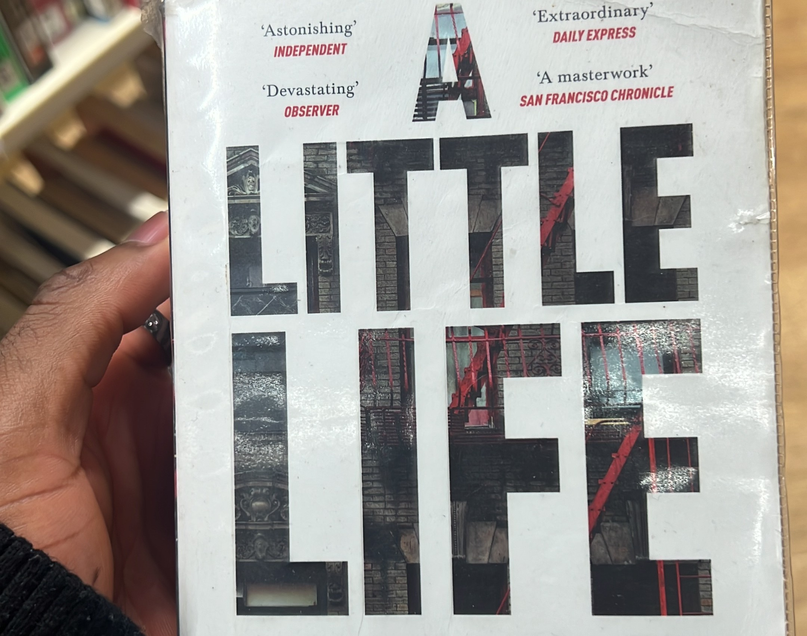

⚠️ Spoilers ahead
Of all the books I’ve read, A Little Life is the one I felt compelled to write down my thoughts on. Interestingly, the book comes with no content or trigger warnings, so you dive in without knowing what you’re about to face. Thankfully, I had already seen reviews on TikTok and talked it over with a friend, so I had some idea of what I was getting into.
Still, while many readers on TikTok describe bawling their eyes out over this story, my reaction was the complete opposite. it filled me with rage. The characters infuriated me to an extreme degree, and I couldn’t hold back my frustration. So here goes nothing.

A little background
A Little Life by Hanya Yanagihara follows four college classmates who move to New York to pursue their ambitions: JB – an artist, Malcolm – an architect, Willem – an actor, Jude – a lawyer, and ultimately the central focus of the story. The story explores themes of friendship, love, trauma, success amongst other themes.
My Thoughts
These were just my thoughts whilst reading the book, not necessarily a book review.
My first thought is: make sure you have money in this life. I can’t imagine how much worse Jude’s existence would have been if he hadn’t been successful. His wealth allowed him to afford constant medical care, keep supplies for his self-harm, live in a high-end apartment with a lift, and take extended time off whenever he was hospitalized (which happened often). In reality, most employers today wouldn’t tolerate that level of absence. This really made me reflect on how inaccessible the world can be for people with disabilities, especially those without financial privilege
Quarter way through, the boredom hit me. Aside from the heavy, dark twists of Jude’s past, the book dragged. When I say it starts slow, I mean really slow. At over 700 pages, the book often felt like Yanagihara was circling around the same points, stretching the narrative far beyond what was necessary. In my opinion, it had no reason to be that long. Still, I kept going, by then I was invested enough to see how Jude’s story would eventually unfold.
The book captures the relentlessness of pain and how life can always be worse than you imagine. Yet it also highlights the power of friendship and love. Jude’s friends and chosen family show him care and understanding, reminding us that everyone deserves love, regardless of disability or trauma. Those moments of compassion were deeply moving.
My pity for Jude eventually ran out. He became frustrating, even infuriating. Despite the unimaginable trauma he endured, I couldn’t accept his refusal to seek therapy or take care of himself. Self-harm from childhood into his 50s, untreated, felt unbearable to read. At some point, you have to try if not for yourself, at least for those who love and care for you. While reading, it felt inevitable that Jude would eventually take his own life—I found myself just waiting to see when and how it would happen. Honestly, I was surprised he lasted as long as he did. (To be clear, I am not in any way promoting or endorsing suicide; this is simply my reaction to how the narrative was constructed.)
I also couldn’t stomach how Harold, Andy, and Willem enabled Jude’s self-destruction. Andy treating Jude’s wounds without pushing harder for intervention felt irresponsible (he did try to convince Jude but not enough for me). And isn’t that against a doctor’s oath, or at least the spirit of it? Andy never reported Jude’s self-harm or the abuse he had endured, he simply kept treating the wounds. What kind of doctor does that make you? Sometimes being “the bad guy” is necessary if it means saving someone’s life.
The character assassination of JB didn’t sit right with me. It was like he was just there to be the asshole in the group. He’s the only Black character in the group, and the way his arc was handled felt suspiciously harsh (yes, I am side eyeing you, Hanya). Even when he struggled with addiction, his friends seemed far less invested in helping him compared to Jude. My boy was just pushed aside. That imbalance was disappointing. My conclusion is that the author really just hated JB.
Willem’s romantic turn with Jude felt a bit weird. The feelings came out of nowhere, and I believe they should have remained suppressed. This could have been a truly beautiful story if the author had chosen to explore the depth and boundaries of platonic relationships among men. I wouldn’t say their relationship lacked authenticity but when Willem continued sleeping with other women without any clear agreement about openness, it felt contrived and unconvincing. If you knew Jude’s state and still chose to be with him, then you should also be prepared to accept all the baggage that comes with it including the absence of sex.
And I end with this (pardon the language):
F*** YOU JUDE.
F*** EVERYBODY.
F*** YOU HANYA.